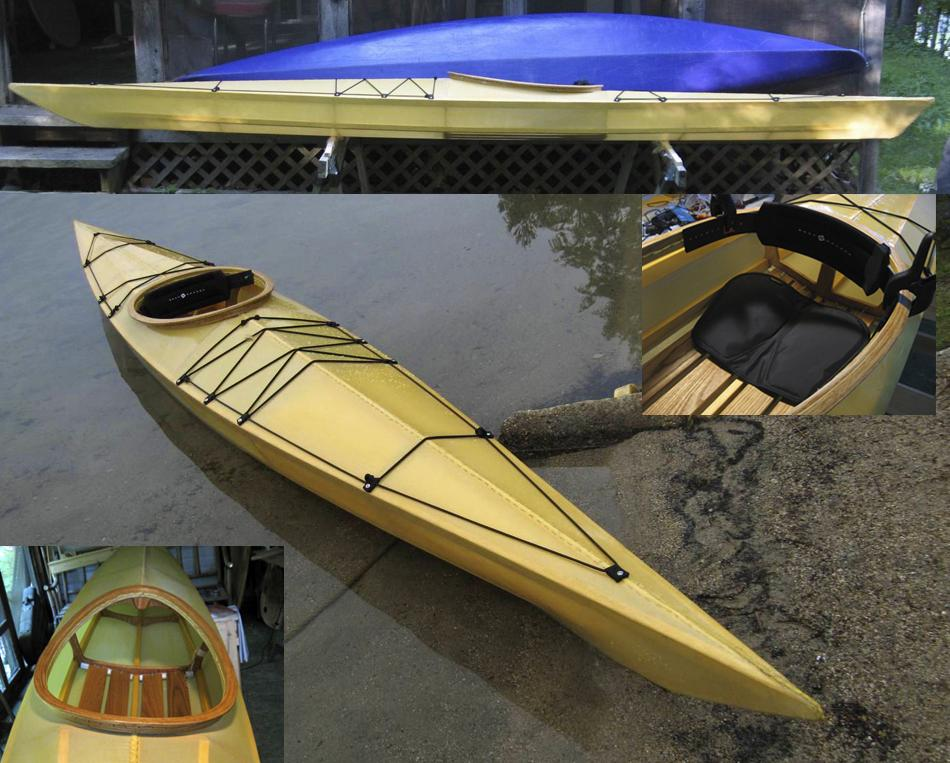

| Sea Tour 15-R by Terry Reed (US)...Scroll Down | Menu Last Page Next Page |
|

Terry, from Massachusetts, displays his Sea Tour 15-R. He modified the offsets slightly to raise the deck 5/8" and the deckridge an inch. The final size is 16' long, 22" wide, 12" deep and weighs 38 lbs. The frame is marine plywood with clear pine stringers, oak floorboards and coaming. The coaming was made by laminating 3/32" oak strips and required no steam bending (just wrapped the strips with a wet cloth for a few minutes before bending). Skinning materials are from Corey Freedman (850 original nylon, 2-part urethane, amber dye). It's finished off with a Snap Dragon backband, Skwoosh sitting pad, and Spirit Line floatation bags. Terry's comments .... " I couldn't be happier with the results. I was looking for a light, fast touring boat for inland lakes and rivers and that's what I got." Terry has documented the building process at the following LINK. Use the {Back} key to return.
|
|